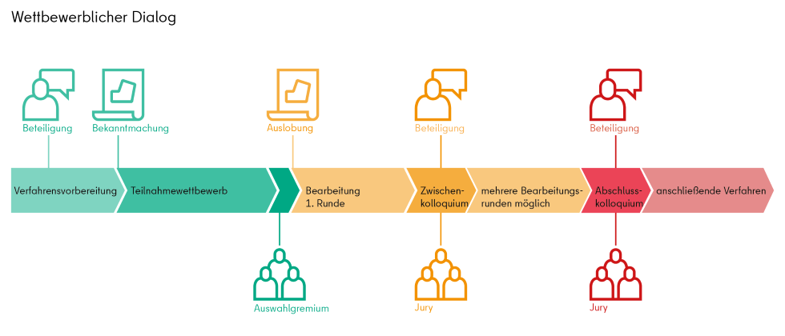

Verfahren
Wettbewerblicher Dialog
Aufgrund der Komplexität der Aufgabe und der Konstellation der verschiedenen Akteure, wurde für die städtebauliche Entwicklung des Areals ein „wettbewerblicher Dialog“ gewählt. Mehrere Planungsteams, bestehend aus Architekt*innen, Stadtplaner*innen und Landschaftsarchitekt*innen wurden beauftragt, städtebauliche Lösungsvorschläge zu entwickeln. Im Gegensatz zum Klassischen Wettbewerb konnten dabei die Zwischenstände der Entwürfe und die weitere Bearbeitung immer wieder in, Workshops und Präsentationen mit den Bürger*innen, den Vorhabenträger*innen und Expert*innen des Gremiums diskutiert und besprochen werden. Mit der Auswahl des städtebaulichen Entwurfs um das Planungsteam ISSS und bauchplan).( zur weiteren Ausarbeitung als Grundlage für den anschließenden Bebauungsplan ist der wettbewerbliche Dialog zur städtebaulichen Entwicklung des ULAP-Quartiers abgeschlossen.

Eigene Graphik
Begleitende Bürgerinnen-Beteiligung
In Vorbereitung und begleitend zum wettbewerblichen Dialog fand eine umfangreiche informelle Bürger*innen-Beteiligung mit mehreren Veranstaltung in unterschiedlichen Formaten statt.
Digitaler Infoabend
Um über das Verfahren, das Grundstück und die Beteiligungsmöglichen zu informieren, wurde am 06.05.2021 zu einem Infoabend geladen. Pandemiebedingt musste diese Infoveranstaltung digital stattfinden. Ca. 50 Teilnehmer*innen haben sich hierbei beteiligt. Vorgestellt wurde u.a. auch Auszüge aus einer vorbereitenden Machbarkeitsstudie.
Ideenwerkstatt vor Ort
Als interaktiver Auftakt der Bürger*innenbeteiligung zum ULAP-Quartier fand am 07.05.2021 und 08.05.2021 eine Ideenwerkstatt auf dem Gelände vor Ort statt. Der Fokus lag auf dem ersten Kontakt mit den Anwohner*innen und ersten Gesprächen über das Quartier, das Vorhaben sowie den Planungsprozess. An drei verschiedenen Ständen wurde diskutiert über die Themen „Lebendiges Quartier“, „Was fehlt hier?/Was braucht ihr?“ und „Wo könnte meine Idee verortet werden“. Daraus wurden die nachfolgenden Leitsätze für das ULAP-Quartier formuliert und den Planungsteams übermittelt:
- Lärmgeschützte Grünflächen, mit Durchwegung zum ULAP-Park
- Bezahlbares Wohnen für Familien und inklusives Wohnen
- Offene und ressourcenschonende Bebauung, Erhalt von Bestand prüfen
- Nachbarschaftstreffs & Toiletten
- Verbund von Bildung & Kultur (Urania-Saal, Schule, Bibliothek)
- Kleine Läden, Cafés, Restaurants mit persönlicher Kiez- Note
1. Dialogrunde:
Erste Planungswerkstatt
Zur ersten Planungswerkstatt am 21.06.2021 statt stellten die fünf Planungsteams ihre ersten Entwürfe und Ideen den Anwohner*innen und Interessierten zum ULAP-Quartier vor. Themen der gemeinsamen Diskussion waren:
- Leitbild für das ULAP-Quartier
- Lebendiges Quartier
- Nutzung Freiräume
- Nutzungen der Erdgeschosszonen
- Atmosphäre des Quartiers
Anschließend fand am folgenden Tag ein Stakeholder-Workshop und die Gutachtersitzung statt. Hier flossen die Wünsche und Ideen vom Vortag aus Bürger*innen-Beteiligung ein.
Zwischenpräsentation
Bei der Zwischenpräsentation am 25.08.2021 präsentierten die fünf Planungsteams den Teilnehmer*innen ihre Entwürfe der ersten Dialogrunde. Die Entwürfe konnten diskutiert und nach den Kategorien Lebendiges Quartier, Atmosphäre, Städtebau, Erdgeschosszonen und Freiraumgestaltung bewertet werden.
Ambitionierte Ideen wie das vom Planungsteam BJP & Mandaworks & form follows you vorgeschlagene Public Plateau wurden kontrovers diskutiert konnten aber Anklang finden in positiven Bewertungen, ebenso wie die Kleinteiligkeit der Gebäudestrukturen und die diverse Nutzungsmischung. Grünterrassen, die Dachnutzungen und die Platzsituationen an den Quartierseingängen wurden bereits hier im Entwurf von ISSS & bauchplan).( besonders positiv gesehen.
Das Ergebnis der Beteiligung wurde am nächsten Tag durch die Bürgervertreterin in der Sitzung des Gutachtergremiums vorgestellt und floss in die Beratung des Gremiums und die Auswahl von drei Planungsteams für die zweite Dialogrunde ein. Die Entscheidung des Gremiums fiel auf die Teams um BJP, Mandaworks, form follows you und ISSS, bauchplan).( sowie urbanophil, Kepler 32, Gruppe F.
Beiträge Runde 12. Dialogrunde:
Zweite Planungswerkstatt
Am 14.09.2021 fand die zweite Planungswerkstatt statt. Es wurden zusammen mit den Bürger*innen und den drei verbliebenen Planungsteams an verschiedenen Thementischen zu folgenden Schwerpunkten diskutiert:
- Klima
- Mobilität
- Erdgeschosszonen
- Soziales
- Nutzungen
Digitale Endpräsentation zur 2. Dialogrunde:
Am 06.12.2021 fand die öffentliche Abschlusspräsentation der Entwürfe zur Umgestaltung des ULAP-Quartiers, pandemiebedingt im digitalen Format statt. Die Entwürfe konnten zum Abschluss der zweiten Dialogrunde nochmals kommentiert und diskutiert werden und die Anmerkungen flossen wiederum in die folgende Auswahlsitzung des Gremiums ein. Nach der Präsentation der Entwürfe durch die drei verbliebenen Planungsteams folgte eine offene Diskussion zu den Themengebieten, an denen die Entwürfe vergleichend gegenübergestellt wurden:
- Städtisches Quartier
- Lebendiges Quartier
- Nachhaltiges Quartier
Der Wunsch nach einem durchlässigen Quartier, dem Fokus auf Nachhaltigkeit, begrünten Dächern und Fassaden sowie der Umgang mit Bestand und die Sorge nach Verschattung durch zu hohe Neubauten wurde deutlich und konnte in einfließen in die Bewertung der Arbeiten. Die zwei Planungsteams ISSS, bauchplan).( und urbanophil, Kepler 32, Gruppe F. wurden vom Gremium für eine finale Schärfung der Entwürfe anhand von allgemeinen und spezifischen Überarbeitungshinweisen ausgewählt.
Beiträge Runde 23. Dialogrunde:
Finale Ausarbeitung in der 3. Dialogrunde
In einer letzten Dialogrunde wurden die grundsätzlichen städtebaulichen Ansätze der beiden verbliebenen Entwürfe geschärft und die noch offenen Fragestellungen gelöst, die in den vorangegangenen Runden der Bearbeitung aufgekommen sind.
Beiträge Runde 3mein.berlin.de
Auf mein.berlin.de wurde kontinuierlich die digitale Bürger*innenbeteiligung durchgeführt. Hier konnte die Anwohner*innen und Interessierte auch außerhalb der Veranstaltungen die Entwürfe und Zwischenstände einsehen und bewerten. Auf mein.berlin.de sind auch weiterhin Informationen zum Projekt, dem Beteiligungsverfahren, Ergebnissen sowie Hinweise zu noch kommenden Terminen veröffentlicht.
Ausblick - wie geht es weiter?
Das Dialogverfahren ist abgeschlossen und es gibt einen Beiträge. Im Rahmen des nun anschließenden Bebauungsplanverfahrens wird in den nächsten Wochen die frühzeitige Beteiligung der Träger öffentlicher Belange durchgeführt. Für die Bearbeitung des Bebauungsplanes 1-110 werden weitere notwendige, fachspezifische Untersuchungen durchgeführt und Stellungnahmen verschiedener Fachämter für den Bebauungsplan eingeholt.
Im Bebauungsplanverfahren erfolgt des Weiteren die Beteiligung der Öffentlichkeit gemäß § 3 Abs. 2 Baugesetzbuch. Darin wird es der Öffentlichkeit ermöglicht, den Entwurf des Bauleitplans mit der Begründung und den vorliegenden umweltbezogenen Stellungnahmen für die Dauer eines Monats einzusehen. Ort und Dauer der Auslegung sowie Angaben dazu, welche Arten umweltbezogener Informationen verfügbar sind, werden mindestens eine Woche vorher ortsüblich bekanntgegeben. Während dieser Zeit können zum Verfahren und den ausgelegten Unterlagen Stellungnahmen abgegeben werden. Die Belange, die für die Abwägung von Bedeutung sind (Abwägungsmaterial), werden ermittelt und bewertet. Über den aktuellen Stand des Bebauungsplanverfahrens sowie weitere Beteiligungsmöglichkeiten im Rahmen der formalen Öffentlichkeitsbeteiligung nach dem Baugesetzbuch können Sie sich weiterhin auf mein.berlin.de oder über 1-110@senstadt.berlin.de informieren.